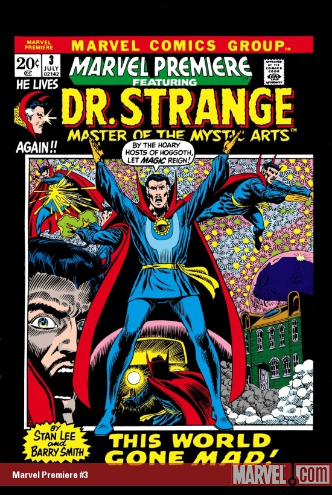

Series: Marvel Premiere
Characters: Doctor Strange
Released: July 1972
Publisher: Marvel Comics
Illustrator: Barry Smith
Writer: Barry Smith, Stan Lee
Story:
Lost in thought Dr. Strange is almost struck by a truck while crossing the road, however a spell saves him at the last moment. Returning to his Sanctum, Strange ponders further over a sense of dread of some opposing force that is waiting to strike. After seeking the advice of the Ancient One, Strange soon becomes aware of a presence in his Sanctum.
Chasing this presence in his astral form, he is too late to stop it from taking possession of his physical body. It attacks Strange, and after a fierce battle, Strange realizes his astral form could touch his foe, when his opponent tries to leap out of the Sanctum's window, Strange prevents it from falling, only to realize that the Sanctum had been transported to another realm.
Bothered by a version of himself manifesting in trees and clouds telling him to surrender to the force around him, he uses the Eye of Agamotto to learn the truth. He learns that he actually got hit by the truck and now is in emergency surgery and that he is really in the dream world. Upon his discovery he also learns it is his old foe Nightmare who is responsible and the two battle each other until Strange defeats him.
After his victory, Strange awakens in the hospital and erases the doctors memories of his mystical abilities.
Appearances: